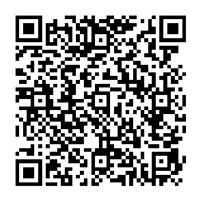

Este é um projeto independente focado em recriar a experiência clássica e nostálgica do Campo Minado original dos anos 90.
Apoie o projeto
Manter este site online envolve custos. Qualquer ajuda será muito bem-vinda.
Doar via Pix

Clique no QR Code para copiar o código Pix ou aponte a câmera do celular.
Mural de Apoiadores
Obrigado a todos que contribuem!
Para aparecer no mural, o valor mínimo é de R$ 2,00.
* Os nomes são adicionados manualmente para economizar custos extras de servidor.
A atualização do mural pode levar até 24 horas.